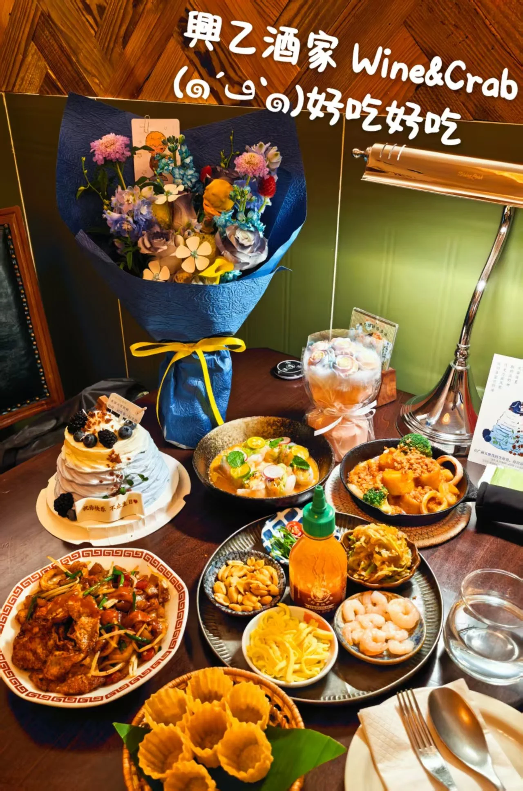

天津兴乙酒家：南洋菜打卡
2026年6月

天津兴乙酒家南洋菜
这一桌最吸引目光的是丰富的颜色：橙黄色的酱汁、鲜亮的绿色点缀、红色辣椒，还有装在小碗里的虾仁和花生，摆在一起很有食欲。
海鲜与小碟的搭配
照片里的几道菜各有看点。一盘裹着深色酱汁，搭配葱段和蔬菜；另一盘能看到圈状海鲜与橙黄色配菜，表面撒着细碎的配料。旁边的酱汁碗上点缀着薄切蔬菜和绿叶，让整桌的颜色更有层次。
圆盘中的虾仁、花生、丝状配菜和小碟分开摆放，前面还有一篮金黄色的酥脆小盏。不同形状和质感放在同一桌上，是这顿南洋菜很有记忆点的画面。
留一点位置给甜品
奶油蛋糕上点缀着深色莓果，浅色奶油与旁边浓郁的菜色形成对照。给这次打卡留一张满桌的合影，记住食物的颜色、摆盘和搭配。